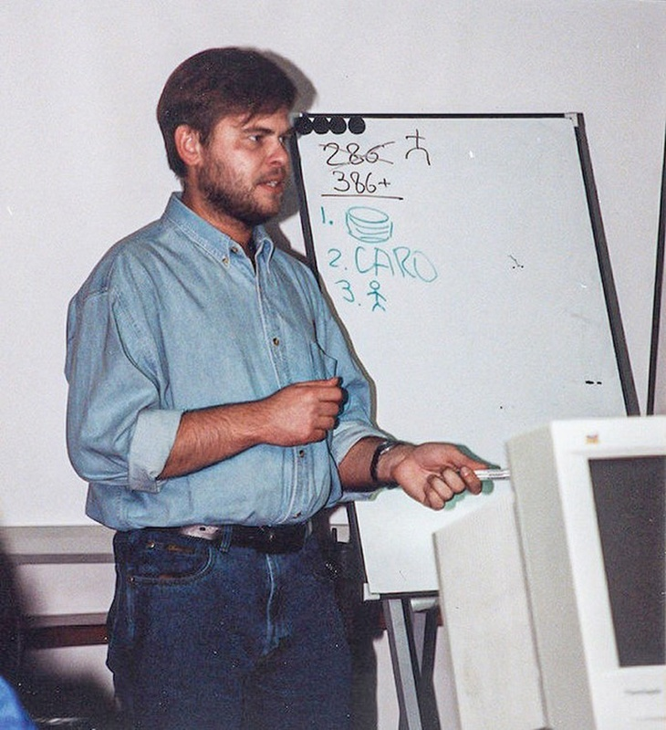

Биография
Изучать вопросы кибербезопасности Евгений начал случайно после обнаружения на своем компьютере вируса Cascade в 1989 году. Специализированное образование в области криптографии помогло ему проанализировать этот вирус, понять его поведение и создать первое в своей жизни компьютерное противоядие. После этого Евгений стал проявлять еще больший интерес к феномену вредоносных компьютерных программ и разработке инструментов защиты от них. Экзотическая коллекция антивирусных модулей, созданных лично Евгением, впоследствии легла в основу антивирусной базы «Лаборатории Касперского». Сегодня она является одной из самых больших антивирусных баз в мире и позволяет избегать заражения более чем 500 миллионами вредоносных программ.
В 1990 году Евгений Касперский вместе с командой единомышленников приступил к разработке антивирусной программы AVP Toolkit Pro. Четыре года спустя лаборатория Гамбургского университета признала ее самой эффективной среди всех антивирусных решений того времени.
В 1997 году Евгений вместе с коллегами принимает решение создать независимую компанию – «Лабораторию Касперского». С момента основания компании Евгений возглавлял антивирусные исследования, а в 2007 году был назначен ее генеральным директором.
Сегодня это одна из самых быстроразвивающихся в мире компаний в сфере IT-безопасности с офисами более чем в 200 странах и регионах. В 34 региональных подразделениях, расположенных более чем в 30 странах, работают более 4000 профессионалов и специалистов по IT-безопасности, а решения «Лаборатории Касперского» защищают более 400 миллионов пользователей по всему миру.